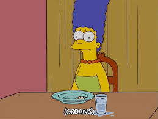
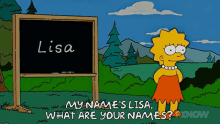
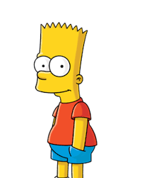
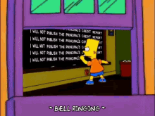

תמונה מפה
בדף זה נראה את מה שנקרא במושגי הHTML תמונה מפה שזה תמונה לחיצה. לאחר לחיצה על אזור מסויים בתמונה נעבור מיד ללינק פנימי בדף שמביא פרטים קצרים על הדמות עליה לחצנו. בחרתי לשים בדף תמונה של משפחת סימפסון מהסדרה האמריקאית הידועה- צופה בה כרגע ונהנה ממנה. לחצו על אחת הדמויות. ניתן לעבור מדמות לדמות ע"י חזרה לתמונה בראש הדף ולחיצה על דמות רצויה או בגלילה של הדף מעלה/מטה.

הומר סימפסון
 הומר הוא האבא במשפחה. דמות מצחיקה עם לב טוב. איש פשוט שמדבר בגובה העיניים, עובד קשה לפרנס את משפחתו ומשתדל להיות איש משפחה טוב. תמיד הילדים הגדולים שלו באים לבקש את עצתו כשהם צריכים ולעיתים הבן ברט מלגלג עליו. הומר מקבל את זה לפי מצב הרוח שלו. דמות שלעיתים הולכת אחרי הרגש ופועלת בצורה לא מחושבת אך ברגע האמת הוא תמיד בוחר בדרך הנכונה(כך זה בעונה הראשונה לפחות).
הומר הוא האבא במשפחה. דמות מצחיקה עם לב טוב. איש פשוט שמדבר בגובה העיניים, עובד קשה לפרנס את משפחתו ומשתדל להיות איש משפחה טוב. תמיד הילדים הגדולים שלו באים לבקש את עצתו כשהם צריכים ולעיתים הבן ברט מלגלג עליו. הומר מקבל את זה לפי מצב הרוח שלו. דמות שלעיתים הולכת אחרי הרגש ופועלת בצורה לא מחושבת אך ברגע האמת הוא תמיד בוחר בדרך הנכונה(כך זה בעונה הראשונה לפחות).
 חזרה לראש הדף.
חזרה לראש הדף.
מארג' סימפסון

אישתו של הומר, אוהבת אותו למרות ש2 אחיותיה שונאות אותו ולמרות שלפעמים בעיני החברה הוא מצטייר כ"לוזר". קשורה אל הילדים שלה, מחנכת אותם לערכים טובים. מפרנסת את המשפחה. ניתן לראות בפרקים שהיא תמיד שואפת להיות בן אדם ערכי- חשוב לה ללכת עם המשפחה לכנסיה ביום ראשון(כפי שנהוג אצל נוצרים דתיים), תמיד אומרת דברים מוסריים, מתנגדת לאלימות וכדומה.
 חזרה לראש הדף.
חזרה לראש הדף.
ליסה סימפסון
 ליסה היא הבת השניה במשפחה(אחרי בארט)- הבת היותר מוצלחת מהילדים הגדולים. משקיעה בלימודים, מתנהגת יפה, מקשיבה להורים. לפעמים רבה עם אח שלה אך בדרך כלל הם מסתדרים. אוהבת לקרוא וללמוד דברים, תמיד אומרת דברים חכמים אך אם זה נאמר לבארט או לאבא הם לא תמיד מקשיבים ועושים את הדברים בדרך שלהם.
ליסה היא הבת השניה במשפחה(אחרי בארט)- הבת היותר מוצלחת מהילדים הגדולים. משקיעה בלימודים, מתנהגת יפה, מקשיבה להורים. לפעמים רבה עם אח שלה אך בדרך כלל הם מסתדרים. אוהבת לקרוא וללמוד דברים, תמיד אומרת דברים חכמים אך אם זה נאמר לבארט או לאבא הם לא תמיד מקשיבים ועושים את הדברים בדרך שלהם.

חזרה לראש הדף.
מאגי סימפסון
 הילדה הכי קטנה, תינוקת. לא מדברת כמצופה מתינוקת ותמיד עם המוצץ בפה. באינטרו של הסדרה ניתן לראות שמעבירים את מגי בקופה של סופרמרקט והיא "עולה" 847 דולר- זה מסמל את העלות החודשית הממוצעת בארה"ב בסוף שנות ה80 להוצאות על תינוק.
הילדה הכי קטנה, תינוקת. לא מדברת כמצופה מתינוקת ותמיד עם המוצץ בפה. באינטרו של הסדרה ניתן לראות שמעבירים את מגי בקופה של סופרמרקט והיא "עולה" 847 דולר- זה מסמל את העלות החודשית הממוצעת בארה"ב בסוף שנות ה80 להוצאות על תינוק.
 חזרה לראש הדף.
חזרה לראש הדף.
בארט סימפסון

הבן הבכור. ילד שובב המתנהג לפעמים בפראות, לא משקיעה ממש בלימודים כמו אחותו ועושה צרות בסביבה שלו. אוהב להתבדח עם חבריו וגם בבית עם המשפחה, עושה מעשי קונדס. עם לב טוב ותמיד בוחר בדרך הטובה והנכונה בסופו של דבר. עובדה מעניינת- מדובב ע"י אישה בכל העונות.

חזרה לראש הדף.